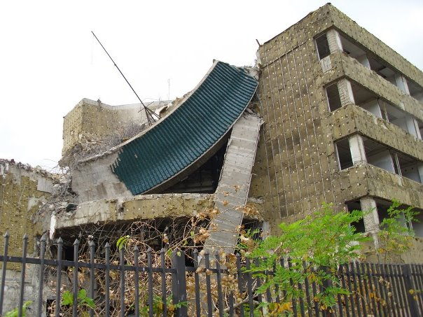
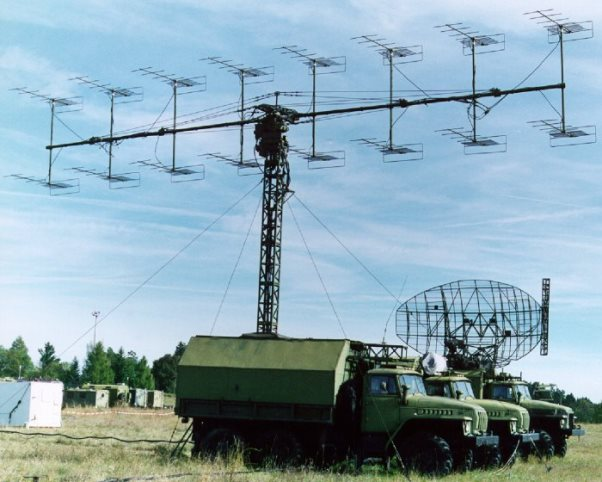
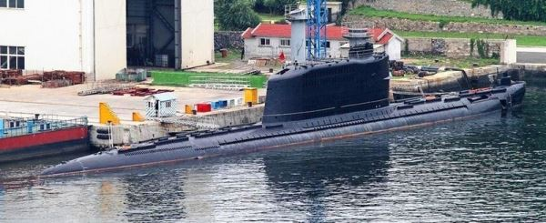
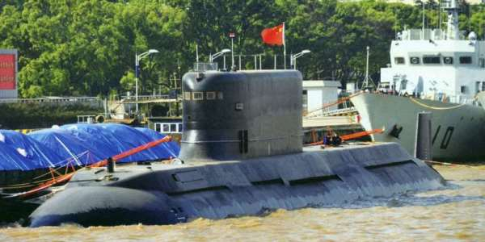
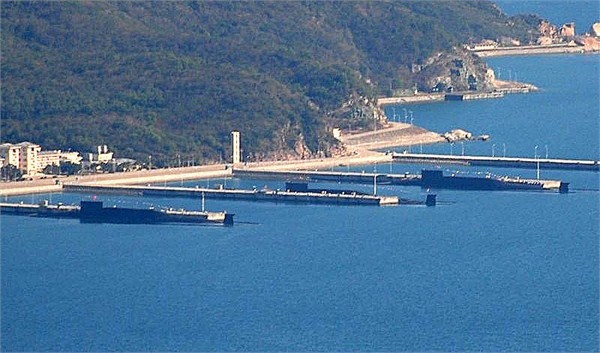

2014-12-17 12:14:00
我在前文《從1996台海危機到東風21D反艦彈道飛彈》裡解釋過1995-1996年的台海危機是中共海空軍現代化的濫觴，在另一篇《美軍對抗共軍的作戦計劃》裡則提到了1990-1991年的海灣戰争是刺激中共陸軍技術升級的原動力。其實中共的戰略核子部隊，包括二炮和核子潜艇，也在1990年代經過一個很類似的震撼教育，其後才奮起直追，到最近終於建成了有實際嚇阻意義的作戰能力，而這個震撼教育就是1999年南斯拉夫戰争期間的炸館事件。
1999年美國以懲戒Serbia方的非人道行為為藉口，拉著北大西洋公約組織（北約，North Atlantic Treaty Organization，NATO）介入南斯拉夫內戰。當時美國軍事霸權如日中天，為了追求零傷亡的完全比賽紀錄，自1999年三月起，開始了人類有史以來第一次純以空襲來撃垮一個有相當軍事能力的對手的戰爭。在當地時間1999年五月7日深夜（中國時間五月8日）的一次空襲中，B2轟炸機投下了五枚JDAM衛星制導炸彈，精確地命中了中共大使館。本來中立國的大使館在法律上是該國的領土，交戰雙方都有責任保障它不受攻撃；但是為防被誤炸，暫住在大使館內的訪客（主要是記者群；大使和職員住在附近的民房）還是被安排睡在地下室裡。不幸的是美軍用了配有延遲引信（好讓炸彈有時間深入目標建築之內）的重磅炸彈，爆炸力深達地基，以致有三名記者死亡，二十七人受傷。

被轟炸後的大使館一角。
事件發生之後，美國政府接連換了好幾個說詞。首先在五月10日，美國國防部長William Cohen宣稱是因為一張“Outdated Map”（“舊地圖”）而誤炸；美國國家製圖局（National Imagery and Mapping Agency，NIMA）和北約都隨即回應：該大使館的位置，所有的地圖都有正確的標示。於是藉口換成大使館和附近的一棟南斯拉夫後勤部的辦公樓有點像，可是媒體馬上發現，要求攻撃那個座標的公文裡說目標是一個“Warehouse”（“倉庫”），不是辦公樓；而且國家製圖局和北約的地圖上，也都正確標示了南斯拉夫後勤部。六月裡，副國務卿（Under-Secretary of State）Thomas Pickering飛到北京去作解釋；他的說詞是所用的地圖上没有明確的建築物位置，所以要打撃南斯拉夫後勤部辦公樓的工作人員就用地址估計了一下，結果估計錯了。像這様明顯的推脱之詞，在美國境外没人相信；連西歐媒體都開始連番猜測幕後的真相，典型的像英國衛報的這篇文章：http://www.theguardian.com/world/1999/oct/17/balkans，《Nato bombed Chinese deliberately》（《北約炸館是故意的 》）。
在七月22日，中央情報局局長George Tenet到眾議院回答質詢（官方的正式記錄在這裡： https://www.cia.gov/news-information/speeches-testimony/1999/dci_speech_072299.html）。雖然他仍然重複Pikering有關“估計錯誤”的說法，但也提供了新的資訊：1）轟炸是由美國戰略空軍執行的，完全繞過了北約的指揮體系；2）炸館任務是中情局發出的，空軍没有複查；3）在整個南斯拉夫戰争期間，中情局要求的轟炸任務就只有這一件；4）中情局的公文裡，的確是把目標稱為一個倉庫；5）他事先完全不知情。這裡的重點在第3項：在歷時78天的轟炸過程中，中情局唯一所以也就是最重要的目標，會是一棟倉庫或者南斯拉夫後勤部的辦公樓？！
到了2000年四月9日，洛杉磯時報登出報導（詳見這裡：http://articles.latimes.com/2000/apr/09/news/mn-17644）說中情局經過两輪的内部調查之後，決定開除一名雇員，並輕微地懲戒其他六名官員，包括一個高級主管和四個中級經理。此後美國官方再也没有任何有關這次炸館事件的消息，大家也不知道被開除的那名雇員是誰，犯了什麼錯誤。一直到2009年三月22日，在華盛頓特區市郊的住宅區，維吉尼亜州的Loudoun郡，發生了一起離奇的命案：一名叫做William Bennett的退休陸軍中校和妻子在自家附近的公園林地散步時，一輛白色的麵包車忽然衝了出來，跳下幾個大漢，個個手持棍棒，迎頭便打。不一會兒，Bennett就腦漿迸裂而死，妻子也受重傷。當地很少有命案，所以有個電視台記者特别深入採訪（詳見http://www.nbcwashington.com/news/local/FBI-Helps-Loudoun-County-Sheriff-With-Ex-CIA-Slaying.html），結果從死者的朋友發現：Bennett就是九年前被開除的那名中情局雇員！這個消息傳出之後，當然眾說紛紜，其中有很多人猜測是中共特工報仇來了。不過仔細想想，就知道不對：先不論中共在鄧小平之後就奉行不干涉主義，完全没有暗殺的先例，就算要報仇，殺這個案件裡最低階的雇員有什麼意思？要殺也該殺他的主管，或是主管的主管。而且為什麼要等九年、十年才動手？真正有動機殺低級雇員的，恰是他以前的主管。中情局素來有殺自己人滅口或報仇的傳統（所以總統任命的局長其實很怕手下的主管們，主管則很怕手下的經理；上週參議院發布報告指責中情局刑求俘虜，三個前任局長急著出來辯解，實在有不得已的苦衷），而這些案件只有當死者是知名的高級官員時，才會見諸報章。例如1996年前局長William Colby在風平浪静的水上獨自划船，莫名其妙地溺水而死，警方說是意外。又如1978年，前主管John Paisley駕小帆船出遊，結果屍體被發現綁著潛水壓重（Diving Weight），太陽穴中了一槍，警方居然以自殺了案。而這次Bennett的命案，最後也是以幫派活動為藉口，不了了之。
至於中共方面，則從一開始就認定炸館事件是一起蓄意的攻撃，而且連中情局背後的動機都很清楚：剛好在1999年三月27日，一名叫做Zoltan Dani的南斯拉夫防空飛彈營營長，用1960年代的老式蘇聯SA-3地對空飛彈伏撃了四架轟炸完畢在返航途中的美軍F117隱身攻撃機。正因為他的老式搜索雷達用的是波長很長的VHF頻道（其原理請參見前文《雷達與隱身技術之間的矛盾關係》），結果F117的隱身失效，以致其中一架被成功撃落，其殘骸立刻成為中俄两國外交官争相購買的熱賣品。F117殘骸的技術價值在於它的隱身塗料和引擎噴尾的隱身設計，中俄雙方都至少獲得了前者；剩餘的殘骸則至今仍陳列在貝爾格勒的一個博物館裡。原本我對中情局為了摧毁藏在中共大使館内的F117殘骸而發動攻撃的說法還半信半疑，但是在Bennett命案發生後，發現他在加入中情局以前在美國陸軍反情報單位負責反撃中共對爱國者飛彈的技術搜集，所以就不再有疑慮了。而且在2008年，美國空軍忽然把所有的F117提前退役，這不但印證了中俄已獲得美國隱身技術的說法，而且也解釋了Bennett命案的時機：他可能是在考慮出來譴責中情局没有盡力保護好F117的技術機密，以致好好的整個機隊必須提前退役，所以被滅了口。

Dani所用的P18型VHF搜索雷達，是1950年代的P12的改進型，天線陣列從12個八木天線增加到16個，1970年服役，技術並不先進，電子元件仍然用的是真空管，但是在波長上有先天的物理優勢，以致成了隱身戰機的剋星。1999年時，美軍的反雷達裝置根本就不能探測到P18所用的頻道，所以可以持續開機運轉。
1996年台海危機時，美軍還只是在外海示威，而1999年的炸館事件卻是明目張膽的侵略和謀殺。從此中共認清了美國的真面目，也就是表面上天天把國際法掛在嘴上，暗地裡卻把它當擦屁股的衛生紙。這様有多次謀殺前科的冷血變態（Psychopath）國家卻掌控著壓倒性的核子武力（如果你覺得美國會對中共進行先發攻撃的說法太誇張，請讀讀National Security Archive的記錄，例如這份1963年的秘密文件https://nsarchive.files.wordpress.com/2014/12/seaborg-diary-21-june-1963.pdf討論了如何假裝“意外”地轟炸了中國本土的方案，目標是中共的原子彈研發機構；至於使用核彈打撃中共的計劃，在1950和1960年代更是不計其數）。1999年當時共軍的核子嚇阻力量只有很少的幾枚陸基的洲際彈道飛彈，而且還是液體燃料的東風5型，既不能機動，也不能馬上發射，如果美國什麼時候高興要進行先發攻撃，很簡單地就可以把它們全部炸光。那時共軍雖然名義上有戰略導彈核子潜艇，但是092型潜艇搭載的巨浪一型飛彈只有1700公里的射程，還不够打到關島。而且092型毛病極多，一出海就有沉没的危険，所以首艘406號在1988年冒険試射巨浪一型成功之後，就一直待在港裡，不能進行戰備巡航。真正有洲際飛彈射程的巨浪二型在1988年立項之後，被發現難度太高，資金需求太大，很快就被擱置，連用來做先期潜射導彈試験的長城200號柴油動力潜艇也在1991年被封存。這一切都在炸館事件後，有了180度的轉變。在1999年五月（也就是在美國副國務卿去北京之前，中共已經對事件的來龍去脈了然於胸，所以F117殘骸必然是在大使館内），中共中央軍委下令重新啟動巨浪二型/東風31型（两者是相同的三級固體燃料火箭配裝在不同的發射系統的結果：前者是潜射，後者由機動車發射）的研發工作，094型戰略導彈核子潜艇也立刻上馬。

已退役的長城200號實験潜艇，是共軍唯一的一艘高爾夫級（北約給的名字，蘇聯自己稱為629型）潜艇，由中共依蘇聯圖紙自行建造，於1966年下水。飛彈艙在塔台後半。因為彈道飛彈的長度遠大於一般潜艇的直徑，所以高爾夫級在艇體下方有一個很大的腫瘤，不過在照片上看不出來。
巨浪二型在2003年的首次試射是成功的，但是其後的幾次試射都因為水下發射筒的問题而失敗了，整個系統因而必須重新設計。換裝了新發射筒的巨浪二型在2011年七月20日首次試射成功，2011年十二月30日和2013年八月16日的後續試験也都圓滿完成，終於定型服役。其後，200號實験潜艇功成身退，由武漢造船厰新建的世界最大的柴油動力潜艇032級接棒，水下排水量達到了6000噸。094型潜艇最早在2004年七月下水，2013年十二月22日試射巨浪二型成功，於2014年開始例行戰備巡航，使共軍真正擁用了水下的二次核子反撃能力。目前已知至少有三艘094型在役，基地在海南。

032級潜艇，北約稱之為“清”級潜艇，只建了一艘，即長城201號。三個飛彈艙也裝在指揮塔後半，可是032級的尺寸比高爾夫級大得多，所以可以有乾净流線型的艇體。為了裝下新一代的大型飛彈，塔台非常大，因此032級的外號是“胖頭魚”。

三艘094級停泊在海南三亜的海軍基地内。094級的噪音很大，技術層次落後美軍的俄亥俄級一代，只能在有己方空軍保護的水域巡航，但是憑藉巨浪二型的射程，仍然可以從南海直接威脅美國本土，是一個不完美卻還算有效的嚇阻能力。